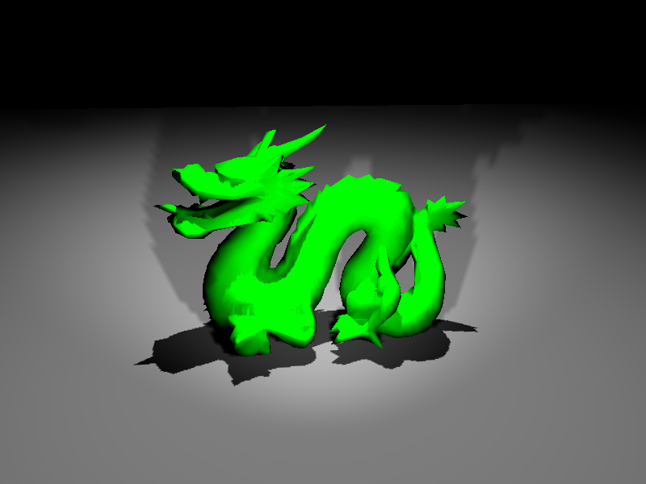

Shadowing (5/7)

Description
Casting shadows in SOFA
Key points
With
SpotLight, it is possible to simply cast shadows in SOFA.
All we have to do is to put the component
OglShadowShader (Shaders in general will be seen after), preferably
in the same Node as the
LightManager, i.e root node of the scene.
You just have to either type CONTROL+'L' combinaison keys, or put the parameter
shadowEnabled to true.
The only remarkable parameter is
shadowTextureSize. Higher this parameter is, nicer the shadow will be. Take care of this,
because if it is too high, it can slow your computer and even more, freeze it. It can be considered that 4096 is the maximum reasonable value.
Note:
For now, shadows are rendered "hardly" (contours are raw).
Don't forget that it uses GPU quite badly, so try to activate shadows only when necessary.